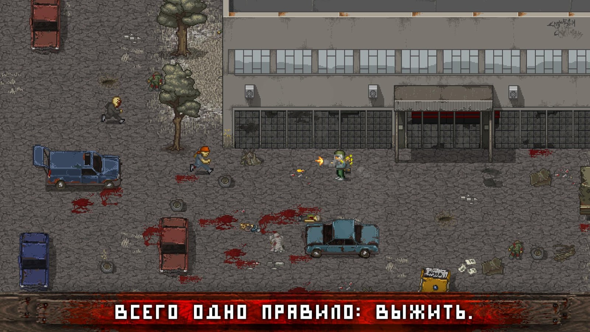
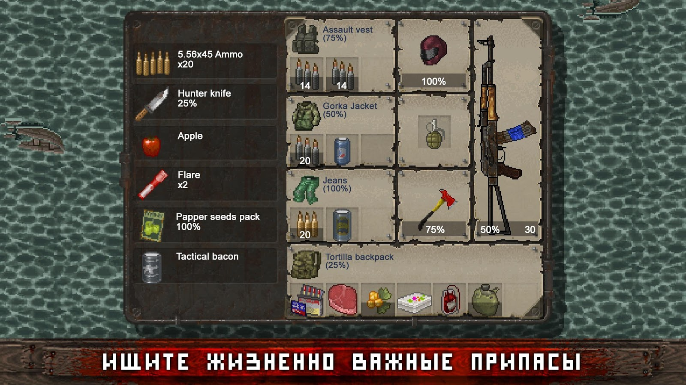
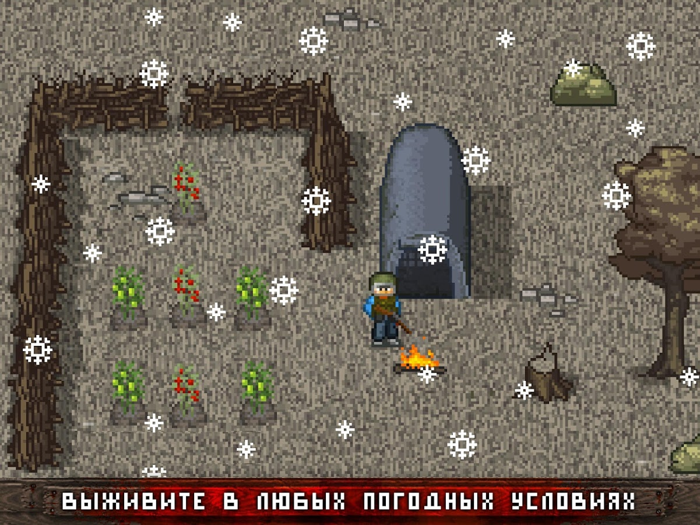

Mini DAYZ: Bыживание в мире зомби апокалипсисе Описание игры Как долго вы сможете выжить в пост-апокалиптическом мире? Узнайте прямо сейчас в Mini DAYZ – официальной пиксельной версии невероятно успешной игры в жанре survival horror для ПК, аудитория которой насчитывает свыше 3 миллионов человек. Это абсолютно бесплатная игра без встроенных покупок.
В Mini DAYZ вам предстоит бросить вызов целому миру: исследуйте карту, генерируемую случайным образом, и ищите еду, боеприпасы и разные материалы. Используйте все, что найдете, для создания полезных предметов. Защитите себя от агрессивно настроенных зараженных и свирепых волков. Но самое главное: не забывайте прятаться от непогоды и холода и следить за уровнем голода и жажды все время. Погода может очень быстро сыграть с вами злую шутку, а ваши раны сами себя не вылечат...
В игре всего лишь одно правило – вам нужно выжить любой ценой. В Mini DAYZ вам предстоит: ● Изучать красивый пиксельный открытый мир со знаковыми зданиями, отрисованный вручную ● Снаряжать своего персонажа, чтобы выжить как можно дольше, используя найденную добычу ● Следить за уровнем здоровья, голода и жажды, а также предотвращать потерю крови ● Выживать, чтобы повысить показатели вашего персонажа, открыть новые умения и открыть достижения за ваши усилия ● Выращивать растения, создавать новые предметы и строить базу с костром и заборами ● Встречать других выживших под управлением ИИ, которые могут быть настроены дружелюбно или враждебно, а также сражаться с различными видами опасных зараженных (или избегать их) ● Стать мастером выживания, используя природные ресурсымой сайт будет про игру мини дейз а еще айсен ботяра слитяра

Мини дейз СКАЧАТЬ Мини дейз СКАЧАТЬ МИНИ ДЕЙЗ СКАЧАТЬ НАЖМИ ПО ССЫЛКЕ
